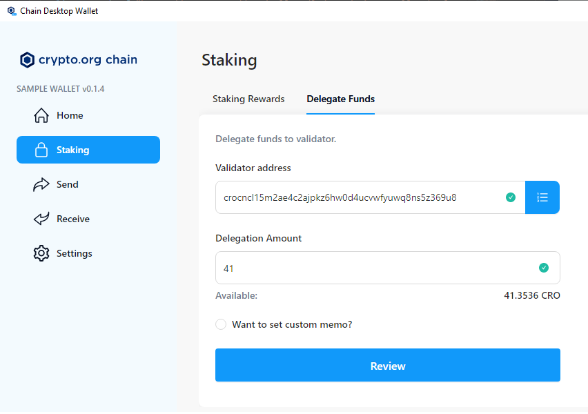
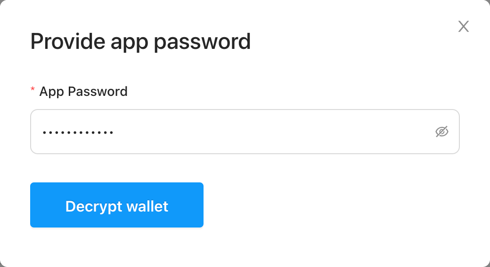
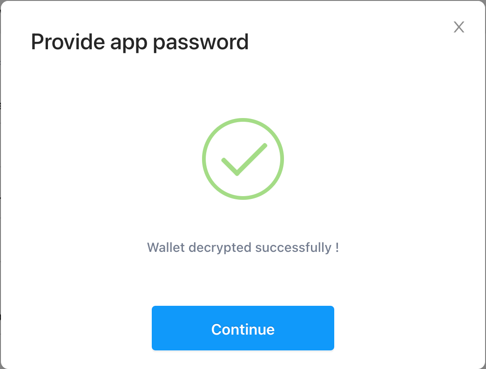
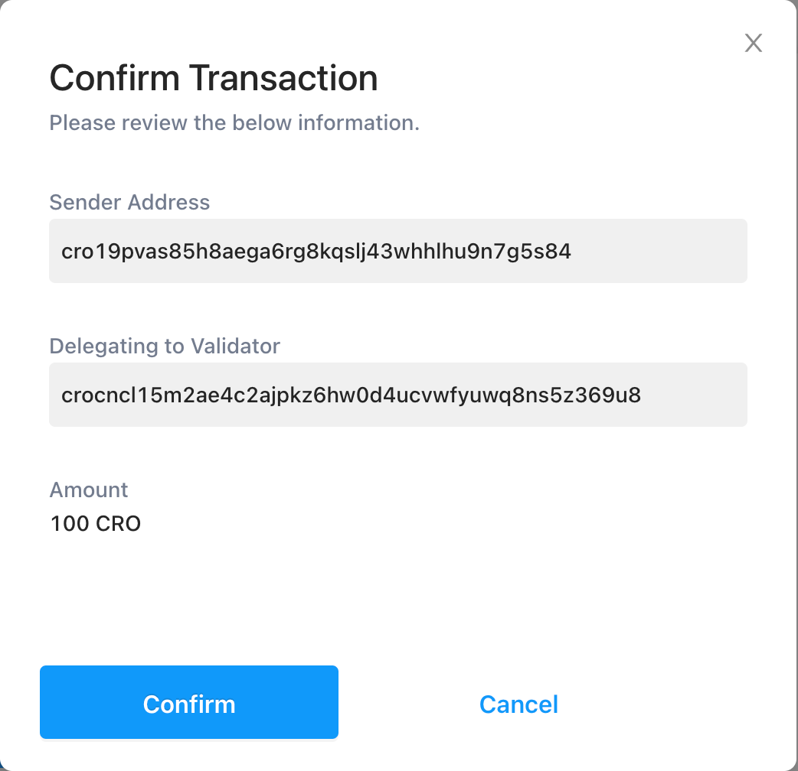
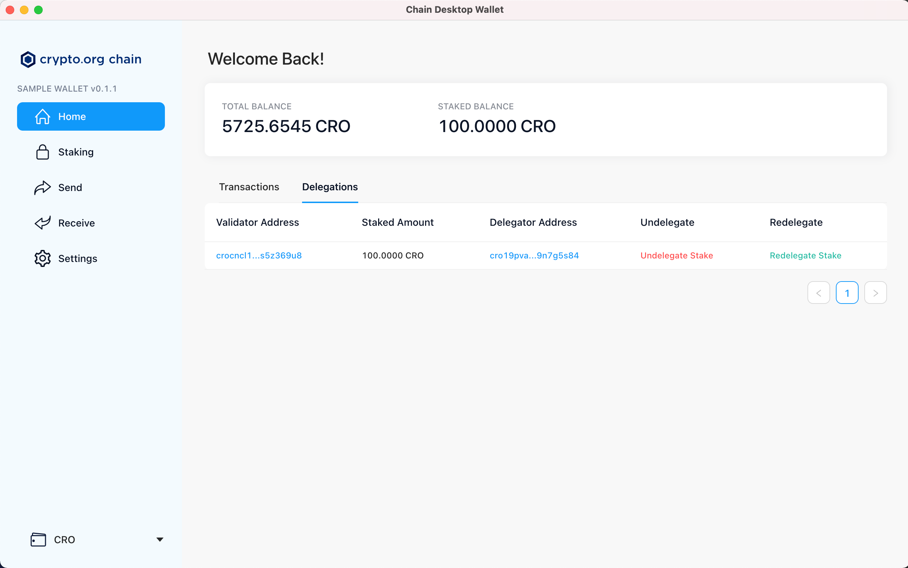

Our validator's information
Our validator’s name (moniker) is: cros-nest
Our validator’s address is: crocncl15m2ae4c2ajpkz6hw0d4ucvwfyuwq8ns5z369u8
You can see our validator on the official Crypto.org Explorer at this address.
How to delegate to Cro's Nest
This guide explains you how to delegate CRO to our validator. There are two ways to delegate:
Delegate using the Crypto.org Chain Desktop Wallet (Beta)
Prerequisites:
- Download the latest version of the Desktop Wallet
- Use Crypto.org's guide to create a wallet using the Desktop Wallet
Once you have create a wallet, follow the steps below
- Go to Staking and click on the 'Delegate Funds' tab
- Put in the Validator's address: crocncl15m2ae4c2ajpkz6hw0d4ucvwfyuwq8ns5z369u8
- Put in the 'Delegation Amount' (in the example: 100 CRO)
- Cick on 'Review'

- Provide the app password
- Click on 'Decrypt Wallet'

- The wallet is decrypted successfully
- Click on 'Continue'

- Confirm the Transaction

- If you now click on Home and on the Delegation tab you can now see CRO stake you just delegated

Delegate using the Crypto.org Wallet Client (chain-maind)
- To delegate using the Crypto.org Wallet Client (chain-maind), you'll first need to create a wallet using the documentation provided by Crypto.org. The document can be found at the following link.
- Once you have create a wallet and transferred CRO to it, you can delegate to our validator using a delegation command such as:
./chain-maind tx staking delegate \crocncl15m2ae4c2ajpkz6hw0d4ucvwfyuwq8ns5z369u8 100cro \
--from Default --chain-id crypto-org-chain-mainnet-1 \--node https://mainnet.crypto.org:26657 --gas-prices 0.1basecro- Note 1: 100cro and Default are given as examples and will most probably have to be edited. In this example , Default is the key name that was used during the wallet creation.
- Note 2: on windows and Ubuntu 20.04: use the --keyring-backend file command line parameter.
If you have any questions please contact us. or join our lobby on Discord